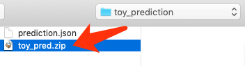

资格赛提交流程
资格赛提交网址
https://codalab.lisn.upsaclay.fr/competitions/4827
注意：请使用评测注册时填报的codalab账号进行结果提交，非注册人员无资格提交结果。
提交基本原则（重要）
- 所有参赛队伍只需在资格赛结束前 提交一次 并将结果 公开显示 在排行榜。
- 资格赛以截止时间在榜单上公开显示的结果做为判定依据，届时未在公开排行榜中体现的结果（即选手没有将任一结果显示在排行榜）被视为主动放弃资格赛排名。
- 参赛队伍可自主决定在排行榜中显示的是哪一次的提交结果，资格赛截止后不允许对榜单做任何修改。
准备工作
在提交结果之前，请完成下述准备工作（仅需一次）。
- 打开CodaLab Competition，登陆后点击右上角菜单中的“Settings”。
- 在Team name里填写队伍名
- 下方的复选框请按需自行选择，建议按照下图进行设置。
提交流程（试验集、开发集、资格集均一致）
请参赛队伍按照如下步骤提交结果。
准备预测文件
预测文件格式（json格式）：
{
"key_name": {
"answer": "YOUR_ANSWER",
"evidence": "YOUR_EVIDENCE"},
"key_name2": {
"answer": "YOUR_ANSWER",
"evidence": "YOUR_EVIDENCE"},
...
}
提示：
key_name：
- 在抽取式阅读理解（CMRC 2018）中为
qid - 在选择型阅读理解（C3）中是
id和问题排列顺序（从0开始）之间加-连接起来的，例如id是00052cc8的第1个问题，则key_name为00052cc8-0。因此不要对问题顺序进行shuffle，否则会导致id错乱~。
answer：
- 在抽取式阅读理解（CMRC 2018）中为抽取出来的篇章片段
- 在选择型阅读理解（C3）中为正确选项编号，即”A/B/C/D”
evidence：从篇章中抽取出的某个连续的片段（即通过start和end指针抽取出的文本片段）作为证据文本。
提交文件样例可参考：https://github.com/ymcui/expmrc/tree/main/sample_submission
线下测试
由于线上线下测试脚本均为官方评测脚本eval_expmrc.py，请务必先在线下测试无误后再提交到线上。
> python eval_expmrc.py 开发集.json 待提交结果.json
结果示例：
{
"ALL_F1": "56.937",
"ANS_F1": "82.848",
"EVI_F1": "67.507",
"TOTAL": 515,
"SKIP": 0,
"VERSION": "expmrc-cmrc2018-1.0",
"FILE": "dev_predictions.json"
}
填写在线提交表单
- 依次点击
Participate->Submit / View Results，并选择需要提交的集合（CMRC 2018或C3)。
- 点击submit，弹出文件选择框，选择要提交的文件（包含json文件的zip压缩包）

注意：
- 由于平台限制，请将模型输出的json文件打包成zip文件。该压缩包内仅包含一个json文件。
- MAC系统请勿直接使用系统自带的压缩，会添加额外的文件夹（__MACOSX）进去。请使用命令行或者其他压缩工具，避免加入额外的文件夹。
等待运行结果
- 提交完成后会添加到运行列表中，待运行完毕后状态会变为
Finished，如下图所示。 - 点击右侧的加号可以查看详细输出和错误记录（提交错误时debug使用）。
- 左侧SCORE显示的是Overall_F1指标。

查看榜单
- 榜单结果的显示和撤回，可点击加号分别选择“submit to leaderboard”或者”remove from leaderboard“。
- 通过
Results页面可查看最新的排行榜。 - 排行榜中显示信息：提交人，尝试次数，最后提交日期，所在队伍，评测指标。
问题反馈
如有任何问题请与CMRC 2022评测委员会联系 cmrc2022 [at] 126 [dot] com